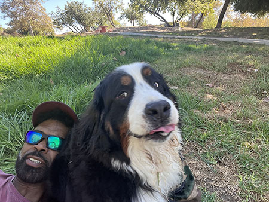
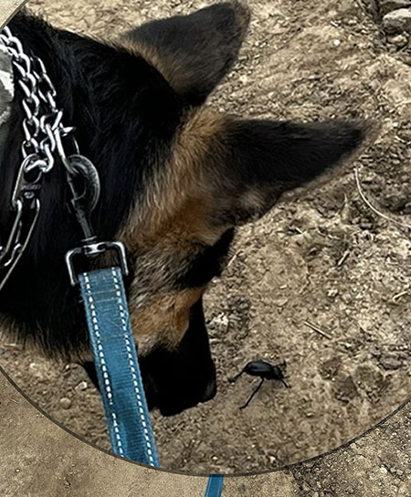
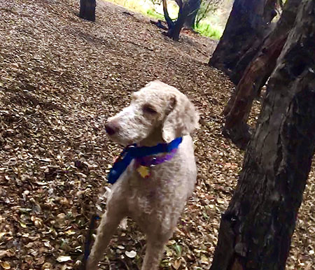

At Wiggle Butts we believe in quality experiences for your loved ones. For example, we like to take your dogs on hikes through
the canyons where they can enjoy the sights and sounds of nature to stimulate their minds and bodies in natural settings.
 |
We assists you by providing your dogs with adequate exercise, primarily in the form of outdoor walks. A Dog Walker’s main duties include transporting dogs to and from their homes, ensuring they have plenty of fresh water and recording information about the route and duration of the walk to relay to the pet’s owner.
We provide the following services:
|
| Our trail walks provide your loved ones with fresh air and physical and sensory perception of scents derived from the environment, botanical life, and organic materials |  |
|
 |
what do you want to say with this image? |